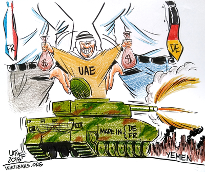

Featured

The Intolerance Network
Today, 5th August 2021, WikiLeaks publishes "The Intolerance Network" over 17,000 documents from internationally active right wing campaigning organisations HazteOir and CitizenGO.
05 August 2021
Fishrot
Today, November 12, WikiLeaks publishes over 30000 documents from SAMHERJI
12 November 2019
OPCW Douma
Today, October 23, WikiLeaks publishes a statement made by a panel that listened to testimony and reviewed evidence from a whistleblower from the OPCW (update)
23 October 2019
Pope's Orders
Today, January 30th WikiLeaks publishes a set of documents from the Catholic Church, shedding light on the power struggle within highest offices
30 January 2019
US Embassy Shopping List
Today, 21 December 2018, WikiLeaks publishes a searchable database of more than 16,000 procurement requests posted by United States embassies around the world.
21 December 2018
Amazon Atlas
Today, 11 Oct 2018, WikiLeaks publishes a highly confidential internal document from the cloud computing provider Amazon.
11 October 2018
Dealmaker: Al Yousef
Today, 28 September 2018, WikiLeaks releases a secret document from the ICC portaining a dispute over commission payment in relation to $3.6B arms deal
28 September 2018